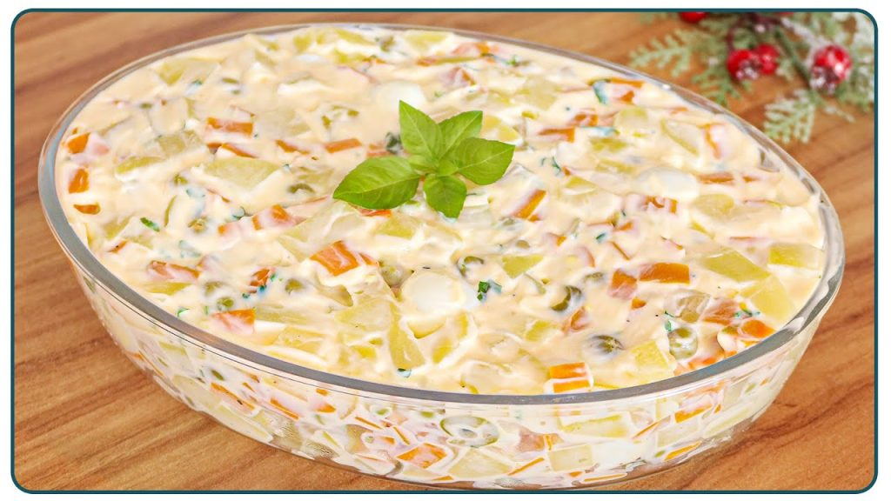

Cozinhe com amor ❤️
As melhores receitas da internet, agora na sua mesa.
üçù Massas e Pratos Principais

Feijoada
Tradição brasileira para o fim de semana.

Lasanha à Bolonhesa
Camadas de massa, molho de carne e queijo gratinado.
üç∞ Sobremesas

Bolo de Cenoura
Receita clássica com cobertura de chocolate.

Arroz Doce
Cremosa e tradicional com canela e leite condensado.
ü•ó Acompanhamentos
Salada de Maionese
Acompanhamento clássico com batata, cenoura e maionese.
ü•ò Receitas Internacionais

Paella
Receita espanhola com frutos do mar e açafrão.